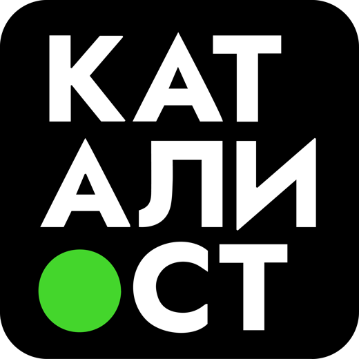

Витрина вариантов6 концепций страницы кейса + 6 концепций блока «Все кейсы». Кликай карточку, чтобы открыть живой вариант. В каждом варианте справа внизу : «🚀 Опубликовать V‹N›» и «Скрыть».
Кейс построен вокруг видео (не фото) : как ты просила. Заложено 2-4 видео на кейс: здесь главное видео плотов + 4 нарезанных клипа с площадки.
Реальный контент только у InWave (твой текст, +30%, папка «Плоты»). Остальные карточки в блоке «Все кейсы» : реальные программы Каталиста (Фудтраки, Мегаполис, WOW Пицца…) для примера раскладки, без выдуманных клиентов.
Одна страница одного кейса. Разные способы подать видео и историю.
Витрина всех кейсов на сайте. Карточки ведут на страницу кейса.